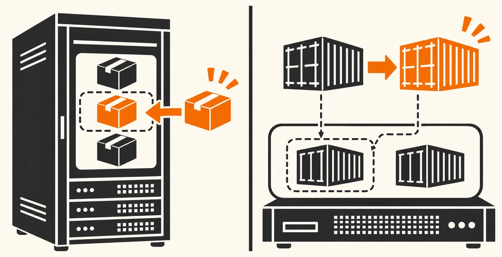
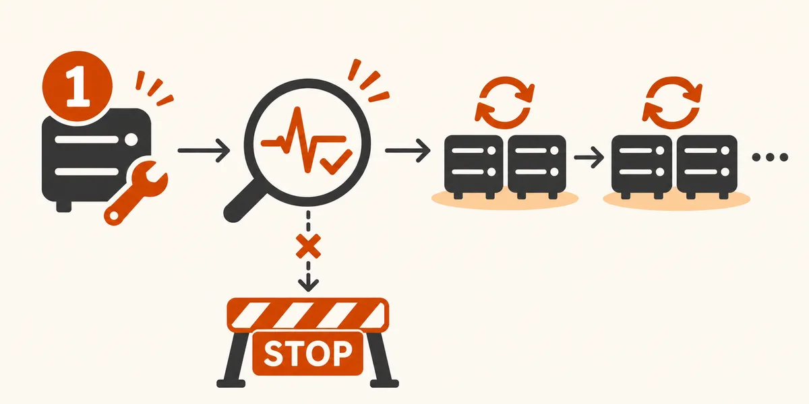

1. どこに入れたソフトかで更新方法を選ぶ
| 対象 | 選ぶ方法 | 注意点 |
|---|---|---|
| EC2の指定パッケージだけ | Run Command → AWS-RunShellScript | OS、配布元、パッケージ系列、必要ならCPUアーキテクチャを分ける。 |
| EC2のOSパッチを定期適用 | Patch Manager → AWS-RunPatchBaseline | パッチベースラインで対象を確認。PHPだけに固定されるわけではない。 |
| Docker／ECS内のPHP | 修正版でイメージを再ビルドし、コンテナを再配備 | EC2側のPHP更新ではコンテナ内のPHPは変わらない。再配備後に稼働中タスクを確認する。 |
| Auto Scalingグループの新規・交換インスタンス | 修正版を含むAMIを作成 → 起動テンプレート更新 → Instance Refresh | 手動で既存機だけ更新すると、スケールアウトや交換先に旧版が戻り得る。起動時の導入処理も修正版を使うよう確認する。 |


- 構成を分けるOS・配布元・導入方式
- 1台で試す同じ構成の先行機
- 動作を確認サービス・応答・ログ
- 対象へ展開並列数と失敗数を制限
2. 先に読み取りだけで確認する
各EC2がSSMの管理対象で、SSM Agentがオンライン、ノードに必要なIAM権限とサービスへの通信経路があることを確認します。実行者にも Run Command の権限が必要です。リージョンとAWSアカウントを取り違えず、タグだけでなく対象台数とIDも確認します。
EC2内でOS・RPM・サービス名を見る
cat /etc/os-release
uname -m
rpm -qa --qf '%{NAME} %{VERSION}-%{RELEASE}.%{ARCH}\n' 'nginx*' 'php*' 'httpd*' 'openssl*' 'kernel*' | sort
systemctl list-units --type=service --all nginx.service httpd.service 'php*fpm*'
uname -rphp -v はCLIの版です。Webが別バイナリやコンテナのPHP-FPMを使っていないか、構成管理やサービスの定義で確認します。RPMが出なければ、独自ビルドやコンテナも候補です。
修正版がそのノードのリポジトリに見えるか
# AL2: PHP 8.2 Extrasを利用している場合
yum --showduplicates list php php-cli php-fpm
# AL2023: 下記はPHP 8.2、今回の固定リリースの例
dnf --releasever=2023.12.20261119.0 --showduplicates list php8.2 php8.2-cli php8.2-fpmこの照会ではパッケージはインストールされませんが、リポジトリに接続してメタデータを更新する場合があります。AL2023の固定先がすでに新しい場合は古い番号に戻さず、組織が承認した修正済みリリースを使用します。
3. 実例：Amazon LinuxのPHP修正版
| OS・配布元 | 修正版の例 | 公式情報 |
|---|---|---|
| AL2 PHP 8.2 Extras | php-8.2.36-1.amzn2.0.1 | ALAS2PHP8.2-2026-016 |
| AL2023 | 8.2.36、8.3.37、8.4.28、8.5.13（各 -1.amzn2023.0.1） | 2026-190-AWS |
AL2の修正版はPHP 8.2 Extras用です。AL2 Coreや別の配布元とは分けて確認してください。AL2023でリリースを固定している場合、AWSは 2023.12.20261119.0 以降を案内しています。AWSの配布告知は、個々のEC2に適用済みという意味ではありません。
4. 指定パッケージだけ更新する場合：Run Command
- Systems Manager → Run Command → Run command。ドキュメントは
AWS-RunShellScriptを選びます。 - 先行EC2のインスタンスIDを1台だけ指定します。ロードバランサー配下で必要なら、承認済み手順でトラフィックを外して実施します。
- 導入済みの対象パッケージと承認済みの修正版を指定します。PHPならCLI、FPM、拡張も含めて依存関係を確認し、意図しない別系列の導入や削除を認めません。
- 先行機が合格したら、同じ構成のEC2を運用タグで選択します。例：
PatchRing=php82-al2023。最初の本番バッチはMaxConcurrency=1、MaxErrors=0。
次は例示です。対象OSの片方だけ選びます。例のパッケージがすべて導入済みで、この版が承認済みの場合に限ります。すでに新しい修正版の場合は実施不要です。本番へそのまま貼らず、対象に合わせて確定してください。
# AL2 PHP 8.2 Extras
sudo yum update php-8.2.36-1.amzn2.0.1 \
php-cli-8.2.36-1.amzn2.0.1 php-fpm-8.2.36-1.amzn2.0.1
# AL2023 PHP 8.2（承認済み固定リリースの例）
sudo dnf --releasever=2023.12.20261119.0 upgrade \
php8.2-8.2.36-1.amzn2023.0.1 \
php8.2-cli-8.2.36-1.amzn2023.0.1 php8.2-fpm-8.2.36-1.amzn2023.0.1Run Commandは対話ができません。まず別途、先行機で変更予定をレビューしてから、自動実行で承認済みトランザクションにだけ -y を付けます。MaxErrors=0 は最初のカウント対象のエラー後に新規配布を止める設定で、実行中の処理の中断やロールバックは行いません。未到達のノードなどもあるため、親Commandの表示だけでなく対象全台の個別実行結果を確認します。
5. 定期更新の場合：Patch Manager
Operation=Scan- ベースラインに沿って不足パッチを確認する。インストールは行わない。
Operation=Install- 承認パッチを適用。対象OSとベースラインの内容を先に確認する。
RebootOption=NoReboot- Patch ManagerによるOS再起動を抑える。パッケージ更新時のサービス再起動は別。
Snapshot-ID- メンテナンスウィンドウ外の複数台適用では、同じ作業回に同じUUIDを指定することをAWSが推奨。
カーネルは新しいRPMが入っても、起動中のカーネルは切り替わりません。承認済みの再起動手順を設け、更新前後の uname -r を比較します。再起動を後回しにした状態を「対処完了」にしません。
パッケージの範囲を限定したい場合は、専用ベースラインか、利用条件を確認したうえで InstallOverrideList を使います。Linuxではリストで指定したもののうち、既に導入済みで有効なリポジトリから取得できるものを更新します。依存パッケージの影響は確認してください。定期実行にはメンテナンスウィンドウを使えます。
6. 稼働中のプロセスとサービスを確認する
| 対象 | 確認するもの |
|---|---|
| nginx／Apache | 構成チェック（nginx -t／apachectl configtest）、稼働プロセスとWeb応答。バイナリ更新は設定の再読込だけで済むと決めつけない。 |
| PHP-FPM | 実際のFPMユニットが稼働し、PHPを通る既存の確認用URLが期待どおり。静的ファイルの200だけでは不十分。 |
| OpenSSL | コマンドの版だけでなくライブラリパッケージも確認。旧ライブラリを読み込んだサービスを特定し、必要な再起動とTLS疎通確認を行う。 |
| カーネル | 計画した再起動後の uname -r と、ロードバランサー・アプリ・監視の回復確認。 |
# 実際に確認したユニット名に置き換える
systemctl is-active php-fpm.service
journalctl -u php-fpm.service --since "10 minutes ago" --no-pager
# 対象RPMの版と、必要に応じ承認済みの再起動後に実行中カーネルを確認
rpm -q openssl openssl-libs
uname -rロードバランサーの対象が正常に戻り、5xxやログのエラーが増えていないことも確認します。失敗時は残りへ広げず、事前に決めた復旧手順を使います。
合格条件：修正版が入り、実プロセスが更新版を使い、代表処理が通り、監視指標が悪化していないこと。この4つがそろってから次のバッチへ進みます。
7. 実行ユーザーを変えている場合：更新前後に権限を確認する
結論：パッケージ更新の前に、nginxのワーカーとPHP-FPMのプールが「誰として」「どこを読み書きするか」を先行1台で控えます。更新後の403・502を見て、まとめて所有者を変えるのではなく、失敗したパスだけ直します。
| 役割 | 設定と必要な権限 | エラーの手がかり |
|---|---|---|
| nginxワーカー | nginxの user。静的ファイルは読み取り、親ディレクトリは通過（x）。設定した一時ディレクトリはワーカーが書き込めること。 | 静的ページだけ403、open() … Permission denied。403はアクセス制御が原因のこともあるのでログで区別。 |
| nginx → PHP-FPM | fastcgi_pass unix:… と対象プールの listen が一致すること。Linuxでは接続先ソケットへの書き込み権限と、すべての親ディレクトリの通過権限が必要。 | connect() … (13: Permission denied) の502はソケットと親の権限から確認。(2: No such file or directory) ならパスやサービス起動状態を先に確認。 |
| PHP-FPMのプール | プールの user／group。PHPコードは読み取り、セッション・キャッシュ・アップロードなど書き込みが必要なディレクトリだけ書き込み。 | PHPは応答するが、ログイン・保存などの処理だけ失敗。ファイルを開いた主体がnginxではなくPHPの可能性あり。 |
先行1台で、設定と実際のプロセスを照合する
対象EC2内で実行します。ユニット名とパスは実環境に置き換えてください。MainPID やプールの親だけでなく子プロセスも見ます。User= が空でも、nginxやFPMのワーカーがrootとは限りません。
sudo systemctl show nginx.service php-fpm.service \
-p User -p Group -p SupplementaryGroups -p MainPID \
-p RuntimeDirectory -p FragmentPath -p DropInPaths
ps -eo pid,ppid,euser,egroup,args | grep -E '[n]ginx:|[p]hp-fpm:'
# 次の数値は実際のワーカーのPIDに置換。Groupsは稼働中の補助グループ
sudo grep -E '^(Uid|Gid|Groups):' /proc/1234/status
# 実際に使っているソケットと公開ファイルに置換
sudo namei -l /run/php-fpm/www.sock /srv/example/public/index.html
sudo stat -c '%A %U:%G %n' /run/php-fpm/www.sock
sudo getfacl -p /run/php-fpm /run/php-fpm/www.sock
# 実際にインストールされているRPM名に置換
rpm -qc nginx php-fpm
sudo find /etc/nginx /etc/php-fpm.d -type f \
\( -name '*.rpmnew' -o -name '*.rpmsave' \) -printgetfacl がなければ、まず namei と stat で確認し、ACLの有無は別途確認します。設定確認は、nginxの user／fastcgi_pass、該当FPMプールの user／group／listen* とその参照先に絞ります。起動引数・設定・ログは対象EC2で確認してください。全文はSSMの出力やチャットに載せず、共有する場合は必要な行だけを選び、秘密値を伏せます。
例：nginxを独自ユーザーにしたら、PHPだけ502になる
nginxワーカーを websvc、PHPの実行ユーザーを appsvc とした例です。FPMプールが作るソケットに、専用グループ webfastcgi 経由で接続させます。実行ユーザーを両方同じにしたり、アプリ全体に権限を広げたりする必要はありません。
; 対象プールの例。パスはnginxの fastcgi_pass と一致させる
user = appsvc
group = appsvc
listen = /run/php-fpm/www.sock
listen.owner = appsvc
listen.group = webfastcgi
listen.mode = 0660- 専用グループを用意し、このソケットへ接続するnginxユーザーだけを加えます。すでに
listen.acl_usersやlisten.acl_groupsで管理している場合は、設定済みの許可先を保ったうえで該当ユーザーをACLへ追加します。ACLが設定されているとlisten.owner／listen.groupは効きません。 - 親ディレクトリにも、接続側が通過できる権限を用意します。
/run以下は再起動で作り直されるので、手でchownして終わりにせず、作成元のユニット設定やtmpfiles設定を確認して必要な箇所にだけ反映します。既存の共有ランタイムディレクトリを別ユーザーのRuntimeDirectoryに安易に指定しないでください。 - 設定は更新で置き換わるサービスユニット本体へ直接書かず、必要なら
systemctl editのドロップインに保持します。nginxのuserとsystemdのUser=は別物です。今回のためだけにサービス全体の実行ユーザーを変える必要はありません。.rpmnew／.rpmsaveがあれば差分を確認して必要な設定だけ取り込み、上書きはしません。
所有者とモードが合っていても拒否されるなら、getenforce、ls -Zd、matchpathcon -V、監査ログの sudo ausearch -m AVC,USER_AVC -ts recent でSELinuxを切り分けます。正規のラベルが分かっているなら対象パスだけ restorecon。独自パスの永続ラベルが必要なら、稼働中のポリシーで正しいタイプを確かめて semanage fcontext と restorecon を使います。chmod -R 777 やSELinux無効化で通さないでください。
直した後は、SSMではなくWeb経由でも試す
先行1台で sudo nginx -t と sudo php-fpm -t を実行し、サービスが別の設定パスやバイナリを使う場合はその起動条件に合わせます。構文が通ったら承認済みの保守枠でFPM・nginxを必要に応じて再起動し、ワーカーの実グループと作り直されたソケットを確認します。SSMが成功しても、Webから接続できるとは限りません。
静的ページ、PHPを通る既存のヘルスチェック、可能ならログインや保存など書き込みを伴うテストを先行ノードで確認します。journalctl -u nginx.service -u php-fpm.service --since '10 minutes ago' とサービス固有のログに新しい権限エラーがなく、ロードバランサーが正常になってから次へ。失敗時は一斉更新を止め、先行ノードを配信から外し、設定・権限のバックアップか正常なイメージから復旧します。修正前のイメージに戻した場合は、修正版の再適用までパッチ対応済みとはみなしません。